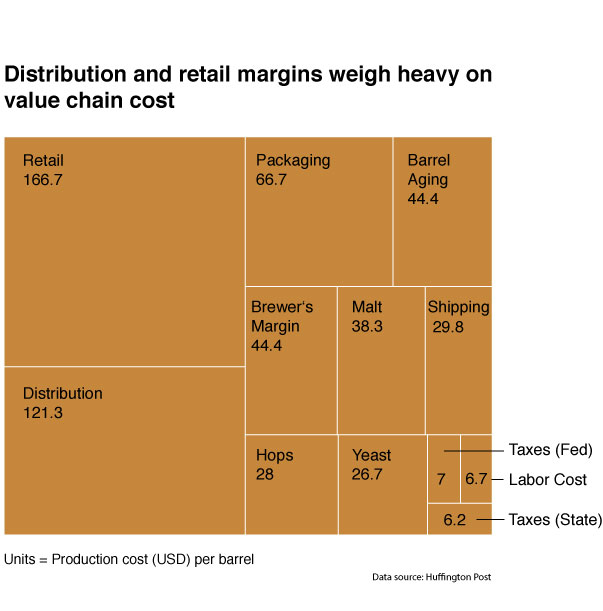
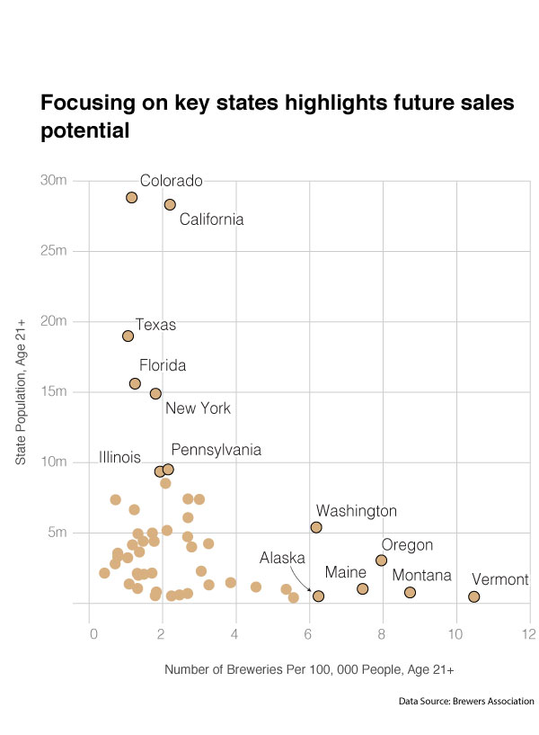

For Craft Brewers, It's "Go Small and Go Home"
How a maturing industry forces beer makers to re-think their business model.
By Stephanie Garnier

After years of exponential growth, the market for regional craft breweries started shrinking in 2015 due to saturation, high production cost and increasing competition from macro-brews. According to the Brewers Association, regional craft beer breweries produce between 15,000 and six million barrels of beer per year while micro-breweries, brewpubs and contractors produce less than 15,000 barrels.
According to the Huffington Post, craft breweries generally face higher value chain costs compared to macro-breweries. This results from a lack of economies of scale, a preference for higher quality ingredients, advanced production techniques such as barrel aging, and a lack of well-established sales and distribution channels. By selling beers locally, for example, adopting the brewpub model, beer makers can cut distribution and retail cost or keep them to a minimum.
In addition to value chain cost, craft beer brewers should also consider the ideal location for their brewery based on state population size and existing number of craft breweries per capita. Brewers following the brewpub or microbrewery models, both of which do not allow for a wide distribution circle, should focus on states that have a lower brewery-per-capita ratio and higher number of people aged 21+. Favorable states are California, Colorado, Texas, Florida and New York.